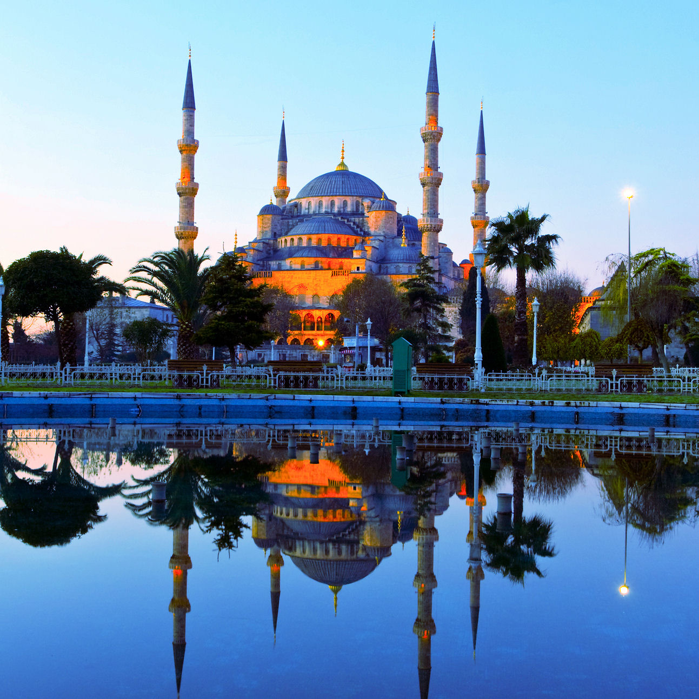
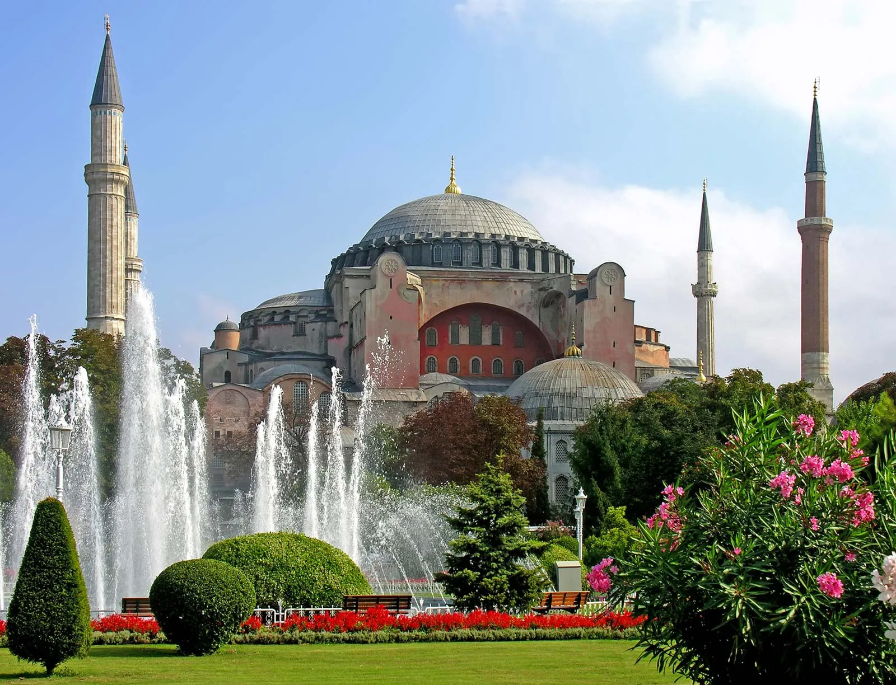
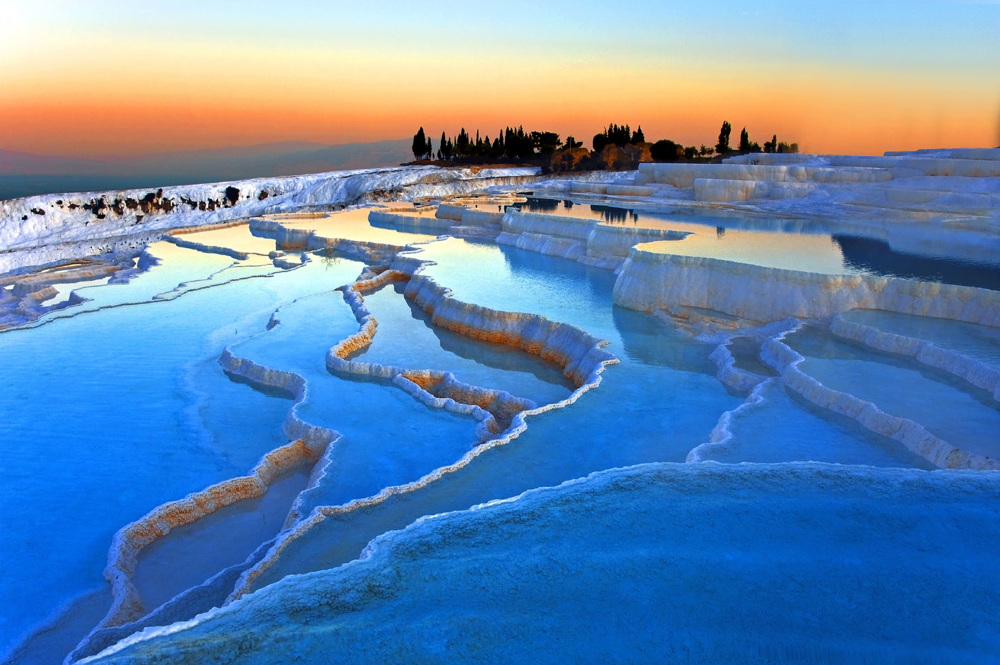

Top Attractions

Cappadocia
Famous for its surreal rock formations, fairy chimneys, and hot air balloon rides. Cappadocia offers a unique blend of history and breathtaking landscapes.

Sultan Ahmed Mosque (Blue Mosque)
Located in Istanbul, this historic mosque is renowned for its stunning blue Iznik tiles, six minarets, and magnificent architecture symbolising the importance of Islam in Turkey.

Hagia Sophia
One of the world’s architectural masterpieces, Hagia Sophia in Istanbul served as a church, mosque, and now museum famous for its massive dome and mosaics.

Pamukkale
Known as the "Cotton Castle," Pamukkale features terraces of white mineral rich thermal waters. Visitors can bathe in the warm, healing waters while enjoying stunning views.

Ephesus
An ancient Greek and Roman city, Ephesus is famous for its well preserved ruins including the Library of Celsus and the Great Theatre.

Göreme Open Air Museum
A UNESCO World Heritage site in Cappadocia, featuring rock cut churches, chapels, and frescoes dating back to the Byzantine era.